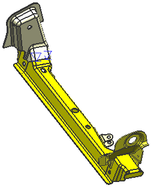

打开部件并查看这个装配中使用的不同类型的焊接
-
打开 wld1_annotation_assy_nx7。
这是一个由多个不同钣金部件，使用不同类型的焊接连接而成的支架。

-
开始建模
 应用模块。
应用模块。 -
在部件导航器中，以时间戳记顺序显示，并查看焊接中包含的特征。
注意到四个焊接特征分组，以及两个固定焊接和一个电铆焊，如果需要，旋转部件以查看这些焊接。
提示
使用静态线框渲染样式来更清除地查看焊接。
-
在部件导航器中，选择模型历史记录中的各个特征，并注意哪个焊接特征在视图中高亮显示。